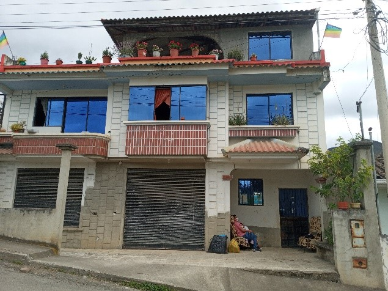
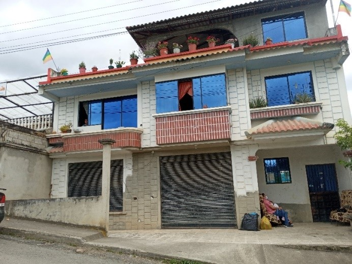
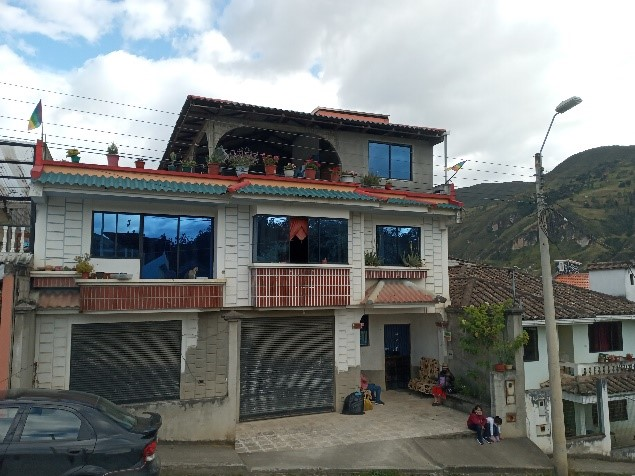

← volver al mapa
Casa - EC-RJ-154920
EC-RJ-154920 · casa · SIGSIG, Azuay
★ Oferta destacada



Datos del remate
| Avalúo pericial | $121,066 |
| Tipo de bien | casa |
| Área de construcción | 423.30 m² |
| Área de terreno | 202.32 m² |
| Cantón / Provincia | SIGSIG, Azuay |
| Dirección / Sector | cachihuayco. cachihuayco |
| Señalamiento | Otro Señalamiento |
| Fecha de remate | 2026-08-27 |
| No. de proceso | 01333201502293 |
Análisis vs. mercado
| Avalúo por m² | $286/m² |
| Mediana de mercado en la zona | $668/m² |
| Descuento vs. mercado | 57.2% |
| Comparables usados | 14 |
| Radio de búsqueda | 2000 m |
| Puntaje | 92/100 |
Descripción completa del avalúo
vivienda de tres piso area de terreno 202.32 m2area de constrccion de 423.30 m2 estructura de hormigon armadocon mamposteria de bloque enlucido y pintado parcialmente, cuenta con balcones de ladrillo visto y una terraza en el tercer piso.pisos de madera, cemento y ceramica.puertas de madera y metal.ventanas de aluminio y vidriocubierta de estructura metalica y planchas de eternit
casa de 3 pisos, frente al estadio
cachihuayco
Análisis de inversión (IA)
★ Buena oportunidadCasa de 3 pisos en Sígsig con 423 m² de construcción sobre 202 m² de terreno, frente al estadio, con un descuento calculado del 57% sobre la mediana de mercado basado en 14 comparables — eso es una señal que justifica investigar más. El avalúo pericial de $121K en una zona rural-serrana pequeña como Sígsig es considerable, lo que sugiere una propiedad de cierto volumen y presencia. Vale la pena avanzar a due diligence antes de descartarla.
A favor:
- Descuento del 57.2% sobre mediana de mercado es significativo y está respaldado por 14 comparables, muestra con tamaño razonable
- Área de construcción de 423.30 m² es amplia para la zona, relación construcción/terreno alta indica aprovechamiento real del lote
- Estructura de hormigón armado con mampostería de bloque, lo que sugiere solidez estructural básica
- Ubicación frente al estadio en Sígsig: referencia geográfica clara, zona con visibilidad y acceso reconocible dentro del cantón
- Tres pisos con terraza y balcones de ladrillo visto: características que añaden valor de uso y comercialización
- Ventanas de aluminio y vidrio: carpintería aceptable para la zona
En contra:
- Sígsig es un mercado inmobiliario pequeño y de baja liquidez — revender o arrendar puede tomar tiempo considerable
- Cubierta de estructura metálica con planchas de eternit (fibrocemento antiguo): puede implicar asbesto si la propiedad tiene años, requiere verificación
- Acabados mixtos (madera, cemento, cerámica, pintado parcialmente) sugieren construcción inconclusa o con mantenimiento diferido
- La frase 'enlucido y pintado parcialmente' indica que la obra no está terminada en su totalidad
- Relación terreno/construcción inusual (más del doble de construcción vs terreno): confirmar que todas las plantas están legalizadas en el municipio
Riesgos a verificar:
- Cubierta de eternit: si la propiedad es anterior a los años 2000, existe riesgo de que contenga asbesto — verificar tipo de plancha y año de construcción
- Construcción parcialmente terminada: riesgo de que haya ampliaciones sin permiso municipal, lo que puede complicar la escrituración o generar multas
- Mercado de Sígsig tiene poca profundidad: el descuento puede reflejar dificultad real de venta en la zona más que una ganga genuina — validar los comparables usados
- No se menciona estado de escrituras, hipotecas o gravámenes: en remate judicial es crítico verificar cargas en el Registro de la Propiedad de Sígsig
- No se indica si la propiedad está ocupada: en remates, la ocupación por posesionarios o arrendatarios puede complicar y encarecer el proceso de toma de posesión
- Zona 'Cachihuayco': verificar si corresponde a zona urbana consolidada o periférica, lo que afecta servicios, plusvalía y liquidez
- Pisos de madera: requieren inspección física para descartar humedad, deterioro estructural o plagas en entrepisos
Generado por IA a partir de la descripción — no es asesoría legal ni financiera.
Esta ficha es una copia de lo publicado en el sitio oficial de remates
judiciales de la Función Judicial del Ecuador, para consulta — no
reemplaza el expediente judicial. remates.funcionjudicial.gob.ec no da
un link propio por remate, por eso se generó esta página aparte.
Antes de ofertar, el expediente debe revisarlo un abogado.